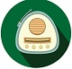

基本资料
联系方式
- 手机:145 6789 2232
- 邮箱:yuanqing@qq.com
- QQ:345990989
- 微信:yuanqingqing
项目经历
道德思想
仁、礼
道德思想
孔子建构了完整的“德道”思想体系：在个体层面主张“仁、礼”之德性与德行。德道思想体系是以性善论为基础，以立人极为旨归，以人道与天道、地道相会通，人道中庸又适时之变为方法论的完足思想体系。
政治思想
仁、礼
政治思想
孔子的政治思想核心内容是“礼”与“仁”，在治国的方略上，他主张“为政以德”，用道德和礼教来治理国家是最高尚的治国之道。
教育经历
经济思想
重义轻利、见利思义
经济思想
孔子所谓“义”，是一种社会道德规范，“利”指人们对物质利益的谋求。在“义”、“利”两者的关系上，孔子把“义”摆在首要地位。他说：“见利思义”。要求人们在物质利益的面公元前，首先应该考虑怎样符合“义”。他认为“义然后取”，即只有符合“义”，然后才能获取。
获奖经历
- 2017年 优秀学生干部
- 2017年 国家奖学金
- 2018年 优秀学生干部
- 2018年 国家奖学金